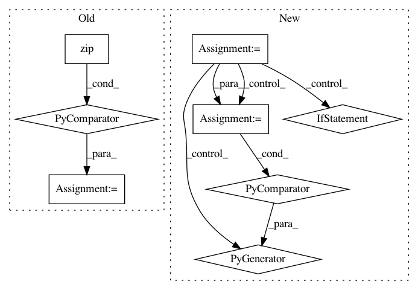

39fcf3cf46d394a6242e4094a11c544394c2a79f,tensorflow_ranking/python/losses_test.py,LossesTest,test_approx_ndcg_loss,#LossesTest#,894
Before Change
labels = [[0., 2., 1.], [1., 0., 3.], [0., 0., 0.]]
weights = [[2.], [1.], [1.]]
example_weights = [[1., 2., 3.], [4., 5., 6.], [7., 8., 9.]]
norm_wts = [
sum([wt * l
for wt, l in zip(wts, lbls)]) / sum(lbls) if sum(lbls) else 0
for wts, lbls in zip(example_weights, labels)
]
with self.cached_session():
self.assertAlmostEqual(
ranking_losses._approx_ndcg_loss(labels, scores).eval(),
After Change
weights = [[2.], [1.], [1.]]
example_weights = [[1., 2., 3.], [4., 5., 6.], [7., 8., 9.]]
norm_weights = []
for weight, label in zip(example_weights, labels):
sum_label = sum(max(0, l) for l in label)
norm_weights.append(
sum(w * max(0, l) for w, l in zip(weight, label)) / sum_label
if sum_label else 0)
with self.cached_session():
self.assertAlmostEqual(
ranking_losses._approx_ndcg_loss(labels, scores).eval(),
-((1 / (3 / ln(2) + 1 / ln(3))) * (3 / ln(4) + 1 / ln(3)) +
In pattern: SUPERPATTERN
Frequency: 3
Non-data size: 8
Instances
Project Name: tensorflow/ranking
Commit Name: 39fcf3cf46d394a6242e4094a11c544394c2a79f
Time: 2020-08-19
Author: no-reply@google.com
File Name: tensorflow_ranking/python/losses_test.py
Class Name: LossesTest
Method Name: test_approx_ndcg_loss
Project Name: WZBSocialScienceCenter/tmtoolkit
Commit Name: 08633bd190028ad3cbe4c13b352b9efeae90f17e
Time: 2019-03-22
Author: markus.konrad@wzb.eu
File Name: tmtoolkit/topicmod/tm_gensim.py
Class Name: MultiprocEvaluationWorkerGensim
Method Name: fit_model
Project Name: deepmipt/DeepPavlov
Commit Name: 0066f83bc6f9f3861119db2593c3007796d2056c
Time: 2018-08-30
Author: mary.vikhreva@gmail.com
File Name: deeppavlov/metrics/bleu.py
Class Name:
Method Name: bleu